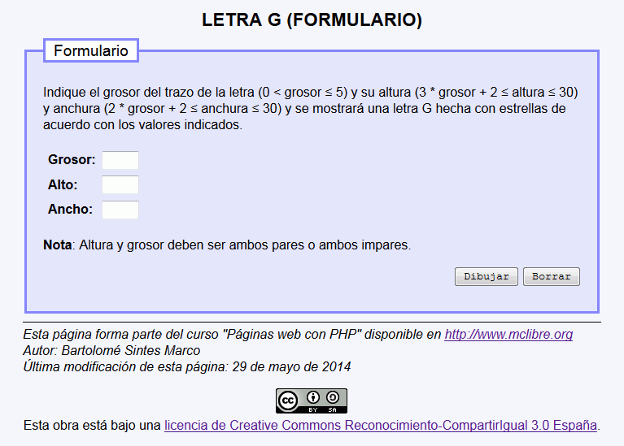
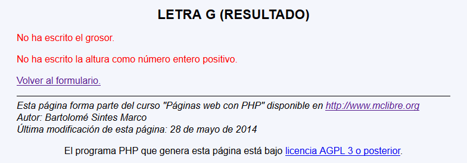
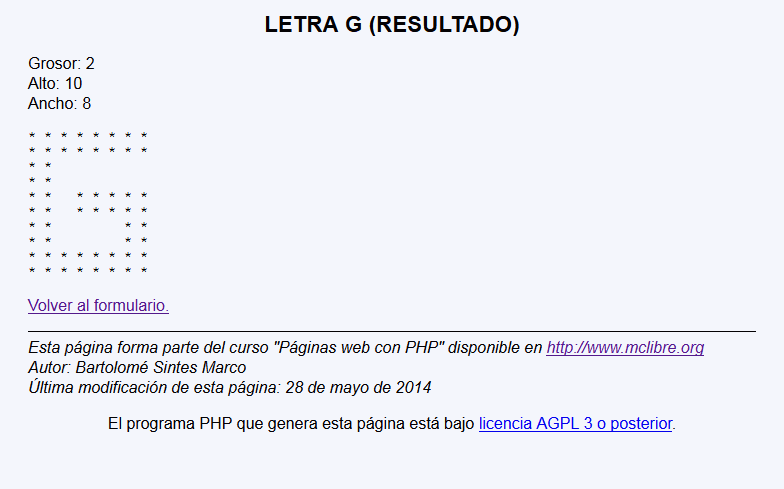

En este ejercicio se debe crear un programa que dibuje una letra G del tamaño indicado por el usuario:
Grosor: 3 Alto: 11 Ancho: 9 * * * * * * * * * * * * * * * * * * * * * * * * * * * * * * * * * * * * * * * * * * * * * * * * * * * * * * * * * * * * * * * * * * * * * * * * * * * * * * * * * * * * * * *


Nota: El trazo central de la E debe estar centrado verticalmente. Si no puede estar centrado, el espacio inferior debe ser una unidad mayor que la superior, como en el ejemplo siguiente.
